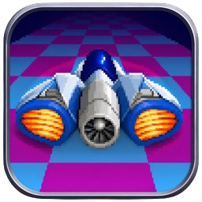
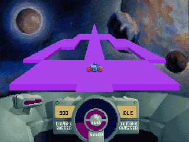

SKYROADSSDL

Real gameplay — bit-exact physics at the original 36.4 Hz tick.
What is this?
SkyRoads (Bluemoon Interactive, 1993) is the legendary DOS game where you pilot a ship over floating roads in space — jumping gaps, dodging obstacles, and running out of oxygen at the worst possible moment. This project ports the original source code to portable C + SDL2, so it runs natively on modern machines: the fixed-point physics are bit-exact, the 3D road renderer was rewritten from the original hand-written x86 assembly, and the AdLib soundtrack plays through a proper OPL2 emulator.
Features
Quick start
macOS: unzip, then right-click → Open the first time (it isn't notarized).
Linux:
tar -xzf skyroads-linux-*.tar.gz
cd skyroads
./skyroadsWindows: unzip, double-click skyroads.exe. That's it.
Or build from source — details in the README.
Controls
| ← → | steer |
| ↑ ↓ | accelerate / brake |
| Space | jump |
| P | pause |
| F9 | music: AdLib FM ↔ wavetable |
| F10 | CRT effects on / off |
| F11 / Cmd-F | fullscreen |